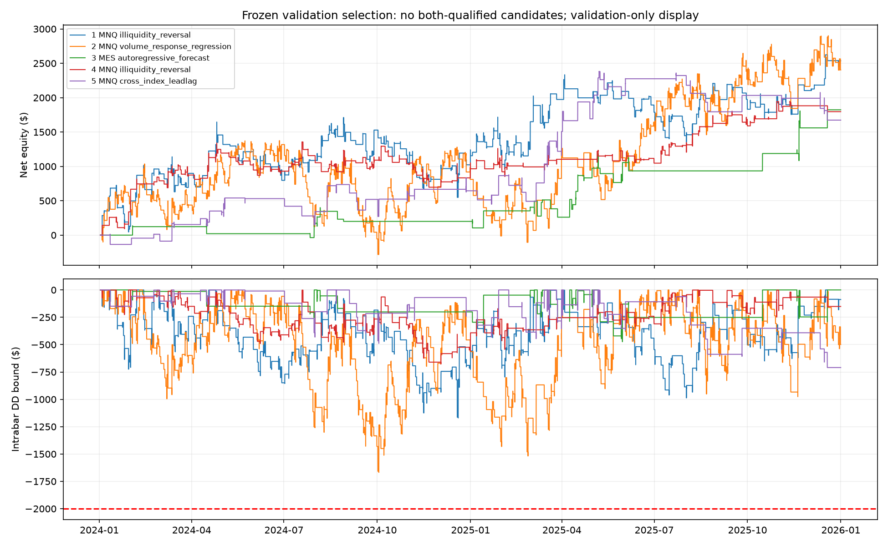

MNQ and MES · Eight statistical entry mechanisms · TRAIN 2020–2023 · VALIDATION 2024–2025
No qualifying replacement. 169 passed TRAIN profit/DD checks; 232 passed VAL profit/DD checks; 51 passed VAL risk checks; zero passed the full criteria on both splits. TEST stayed closed. Validation is model selection on a previously observed period, not independent confirmation.
| family | configurations | TRAIN profit/DD | TRAIN full gates | VAL profit/DD | VAL risk checks | both |
|---|---|---|---|---|---|---|
| autoregressive_forecast | 250 | 37 | 0 | 39 | 16 | 0 |
| markov_sign_grammar | 250 | 11 | 0 | 12 | 0 | 0 |
| clock_expectation | 250 | 23 | 0 | 27 | 1 | 0 |
| volume_response_regression | 250 | 20 | 0 | 7 | 2 | 0 |
| cross_index_leadlag | 250 | 52 | 0 | 39 | 11 | 0 |
| return_skew_exhaustion | 250 | 0 | 0 | 22 | 1 | 0 |
| semivariance_exhaustion | 250 | 0 | 0 | 20 | 6 | 0 |
| illiquidity_reversal | 250 | 26 | 0 | 66 | 14 | 0 |
| ID | Mechanism | TRAIN net | TRAIN DD | VAL net | VAL DD | VAL trades | TRAIN gates |
|---|---|---|---|---|---|---|---|
| novel_829f2293d6b8dee1e060 | MNQ / illiquidity_reversal | $-3,671.00 | $1,838.00 | $2,536.50 | $1,170.38 | 262 | FAIL |
| novel_14f2c840789803d95966 | MNQ / volume_response_regression | $-3,074.00 | $1,819.00 | $2,402.50 | $1,668.25 | 527 | FAIL |
| novel_a25ee79a9490f954414e | MES / autoregressive_forecast | $-1,578.75 | $1,839.75 | $1,823.25 | $473.62 | 42 | FAIL |
| novel_2c0164e716395d5e1f31 | MNQ / illiquidity_reversal | $-947.50 | $1,274.25 | $1,796.50 | $677.25 | 161 | FAIL |
| novel_b94a5d9d92df31b0ab94 | MNQ / cross_index_leadlag | $-441.00 | $1,894.00 | $1,673.50 | $709.50 | 72 | FAIL |
The leading illiquidity-reversal candidate earned $2,536.50 on validation ($1,170.38 intrabar DD), but lost $3,671 on training with three risk locks and only one profitable training year. Validation annual profits were $1,155 in 2024 and $1,381.50 in 2025. Failed TRAIN gates remain failed.

Entries use autoregressive forecasts, two-sign Markov states, historical time-slot expectations, volume-response regression, cross-index lead–lag regression, return skewness, semivariance, and abnormal price impact per traded notional. These are 2,000 configurations of eight mechanisms, with 1,038 distinct training signal paths. Exit variants do not create independent discoveries. A generic lead–lag context feature existed before; this batch uses a distinct frozen regression entry model.
Forty-four targeted checks passed before execution, plus five additional validation-no-refit guards afterward. All 10,000 ledgers reconcile across 592,654 trades. The top five saved validation curves reconcile and isolated fill samples passed. No full validation backtest was rerun for reporting. Four hundred serialized model records cover forward-fold and final validation fits; every cutoff precedes its evaluated year. Latest cutoff: December 24, 2023. Execution code and account risk rules stayed fixed.
All TRAIN results · All VAL results · Frozen protocol · Ledger audit · Model and fill audit
# 2,000 new futures configurations
Completed all2,000 TRAIN and2,000 frozen VALIDATION evaluations. TEST was not accessed.
Eight statistical mechanisms differ from the previous ten-family indicator/momentum library. These are correlated configurations, not2,000 independent discoveries.
Counts: {"evaluated": 2000, "train_positive_dd": 169, "train_qualified": 0, "validation_positive_dd": 232, "validation_qualified": 51, "both_qualified": 0}
TRAIN=2020-2023, four reset annual accounts. VALIDATION=2024-2025, one continuous account. Fitted forecasting coefficients never learn from evaluated years or validation. Prior validation is consumed and used here for model selection; this is not unseen confirmation.
## Mechanisms and results
| Family | Trials | TRAIN profit/DD | TRAIN qualified | VAL profit/DD | VAL qualified | Both |
|---|---:|---:|---:|---:|---:|---:|
| autoregressive_forecast | 250 | 37 | 0 | 39 | 16 | 0 |
| markov_sign_grammar | 250 | 11 | 0 | 12 | 0 | 0 |
| clock_expectation | 250 | 23 | 0 | 27 | 1 | 0 |
| volume_response_regression | 250 | 20 | 0 | 7 | 2 | 0 |
| cross_index_leadlag | 250 | 52 | 0 | 39 | 11 | 0 |
| return_skew_exhaustion | 250 | 0 | 0 | 22 | 1 | 0 |
| semivariance_exhaustion | 250 | 0 | 0 | 20 | 6 | 0 |
| illiquidity_reversal | 250 | 26 | 0 | 66 | 14 | 0 |
## Top5 passing both, ranked on validation
| ID | Market / mechanism | Net P&L | Intrabar DD | Trades | TRAIN qualified |
|---|---|---:|---:|---:|---|
## Top5 validation only; TRAIN flags matter
| ID | Market / mechanism | Net P&L | Intrabar DD | Trades | TRAIN qualified |
|---|---|---:|---:|---:|---|
| novel_829f2293d6b8dee1e060 | MNQ / illiquidity_reversal | $2,536.50 | $1,170.38 | 262 | False |
| novel_14f2c840789803d95966 | MNQ / volume_response_regression | $2,402.50 | $1,668.25 | 527 | False |
| novel_a25ee79a9490f954414e | MES / autoregressive_forecast | $1,823.25 | $473.62 | 42 | False |
| novel_2c0164e716395d5e1f31 | MNQ / illiquidity_reversal | $1,796.50 | $677.25 | 161 | False |
| novel_b94a5d9d92df31b0ab94 | MNQ / cross_index_leadlag | $1,673.50 | $709.50 | 72 | False |
## Top5 training
| ID | Market / mechanism | Net P&L | Intrabar DD | Trades | TRAIN qualified |
|---|---|---:|---:|---:|---|
| novel_aa7ffb731ee1da03d3bd | MNQ / clock_expectation | $6,218.50 | $1,874.50 | 970 | False |
| novel_2fcfbc82f57b54663c4d | MNQ / markov_sign_grammar | $5,038.50 | $1,555.25 | 705 | False |
| novel_dbf498590643aabf7284 | MNQ / autoregressive_forecast | $4,203.50 | $1,636.25 | 332 | False |
| novel_893d66e78cd70f0644dc | MNQ / volume_response_regression | $3,653.50 | $1,720.38 | 325 | False |
| novel_beacf6c33a96c5351336 | MNQ / clock_expectation | $2,879.00 | $1,770.88 | 1116 | False |
## Limitations
The unchanged15m engine uses next-open execution, actual contract economics, fees, spread, slippage, conservative OHLC handling, volume participation and risk locks. Intrabar DD is an OHLC adverse bound, not observed tick-order equity. Funded rules are provisional scenarios, not verified account certification.50%consistency remains evaluation-account-phase-only. Annual reset profits/DD are not a continuous four-year account path. TRAIN top5 have independent fill samples and2x cost diagnostics in training_stress.json; all-case ledgers reconcile. No strategy is promoted, deployed, or claimed independently profitable.
## Entry hypotheses
- **autoregressive_forecast**: Fixed two-lag return regression forecasts the next completed return; fails when serial dependence changes.
- **markov_sign_grammar**: Smoothed next-return expectation conditional on the last two return signs; fails when transition probabilities change.
- **clock_expectation**: Past same-clock next-return expectations; tests recurring inventory/auction pressure, not a hand-picked session direction.
- **volume_response_regression**: Fixed next-return response to unexpected log volume; volume is an OHLCV proxy, not true order flow.
- **cross_index_leadlag**: Fixed regression predicts this index from the other index current/lagged return; missing peer observations prohibit entry.
- **return_skew_exhaustion**: Opposes a sufficiently asymmetric trailing return distribution, rather than a price moving-average displacement.
- **semivariance_exhaustion**: Opposes large imbalance between positive and negative squared returns; fails during persistent asymmetric trends.
- **illiquidity_reversal**: Fades a return with unusually high absolute price impact per traded notional; no order-book/liquidation claim.